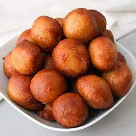

puff-puff Recipe
Puff Puff

What Is Puff Puff?
Most West African countries are familiar with the popular street food Puff-Puff, which is known by different names depending on the country. Ghanaians call it Bofrot (togbei), and Cameroonians and Nigerians call it Puff-Puff (Puff) or beignet in French. The basic ingredient consists of flour, sugar, yeast, water, salt, and oil for deep frying.
Ingredients
- Flour – This pantry must-have isn’t just for baking. It’s also great for many savory dishes.
- Yeast – This is basically the life of the recipe as it makes the dough rise for an airy, fluffy texture.
- Warm Water – An essential part of making any dough. It’s the basis for forming our treat. It’s important to have just the right warmth. If the water is too hot, it kills the yeast. If too cold, the yeast has a hard time rising.
- Sugar – Common table sugar you can easily find in any grocery store gives this recipe a slight sweetness and feeds the yeast for a good rise.
- Cooking Oil – The necessary ingredient for deep frying the puff puffs.
How to Make Puff Puff
- Activate the yeast: Mix salt, water, sugar, and yeast. Set it aside for 5 minutes
- Make the dough: Add flour and mix
- Rest and Rise: Let the mixture rise for approximately 1-2 hours
- Pre-heat the oil: In a large saucepan, pour vegetable oil into a pot until it’s about 3 inches (or 5 centimeters ) high (too little will result into flatter balls), and place in low heat
- Check the heat: Test to make sure the oil is hot enough by putting a drop of batter into the oil. If the oil is not hot enough, the batter will stay at the bottom instead of rising to the top.
- Fry the puff puff
- Hand Method: Using your hands, grab a little bit of mixture at a time and drop it into the oil.
- Spoon Method: When the oil is hot enough, use a spoon to dish up the batter and another spoon or spatula to drop it in the oil. Sort of in the shape of a ball.